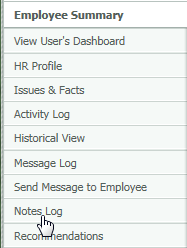
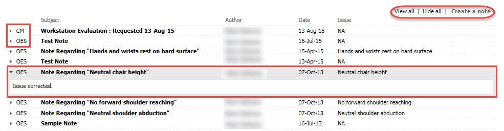
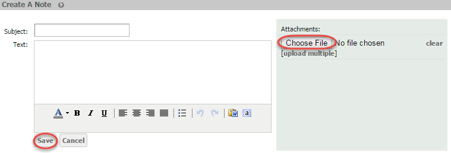

The Notes Log is a list of all notes added by a OES administrator or a ergonomist or physical therapist.
Important: Medically sensitive information should NOT be included in OES notes, in order not to violate any regulatory restrictions.
To view a user's Notes Log:
From the Employee Summary, select Notes Log from the menu on the left.

Notes will be labeled "CM" if it was generated within Case Manager, and "OES" if it was generated within OES. Notes created in the Issues & Facts section are displayed in the Notes Log with their associated issues and facts listed under the "Issue" column.
To read the text of the note, click on the arrow to the left of the note Subject.
The Notes Log may also be printed from this screen.

To create a new note for a user from the Notes Log page:
Select Create a note.
Enter a subject for the note and the note text. Click Save.
Notes cannot be deleted or edited once saved.

You may also add an attachment to a note.